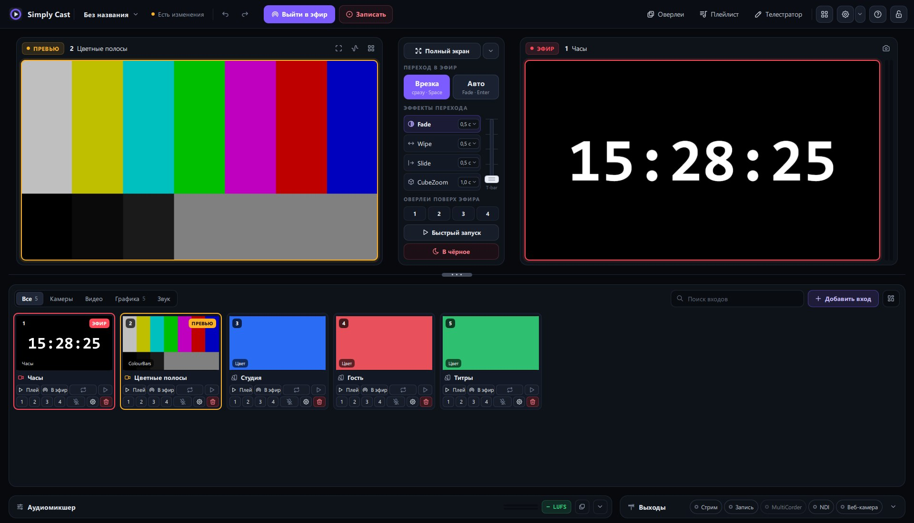
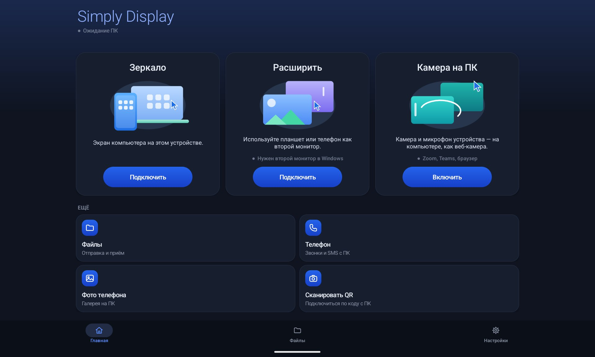

●Petrovich.party · семейство Simply
Эфир, второй экран и пульт — в одной сети.
Видеомикшер для Windows, планшет как монитор и управление с телефона. Бесплатно, без аккаунта.


0 ₽Без тарифов, ключей и срока действия
3Приложения, которые работают вместе
LANДанные не уходят из вашей сети
H.264Видео с шифрованием трафика
01Приложения
Три программы, одна сеть.
Каждая полезна сама по себе. Вместе — удобнее: пульт управляет микшером, а планшет может стать вторым монитором.
Windows · 0.1.0 Подробнее →
Подробнее →
Simply Cast
Видеомикшер: камеры, экран, видеофайлы, NDI и веб-страницы — в эфир, запись и стрим одновременно. Переходы, титры, аудиомикшер с шинами и громкостью в LUFS.
Windows · Android · 1.0.0
Simply Display
Второй экран по сети: телефон или планшет показывает рабочий стол, принимает касания, передаёт файлы, звук и буфер обмена.
Подробнее →Android · 0.3.3
Simply Cast Remote
Пульт: превью и эфир на экране, переключение входов, переходы, камера телефона как вход.
Подробнее →КомпьютерCast
Ваша сетьбез облака
ПланшетDisplay
ТелефонRemote
02Сценарии
Где это пригождается.
Установите и выходите в эфир.
Добавьте камеру и нажмите «Выйти в эфир». Остальное — по ходу дела.